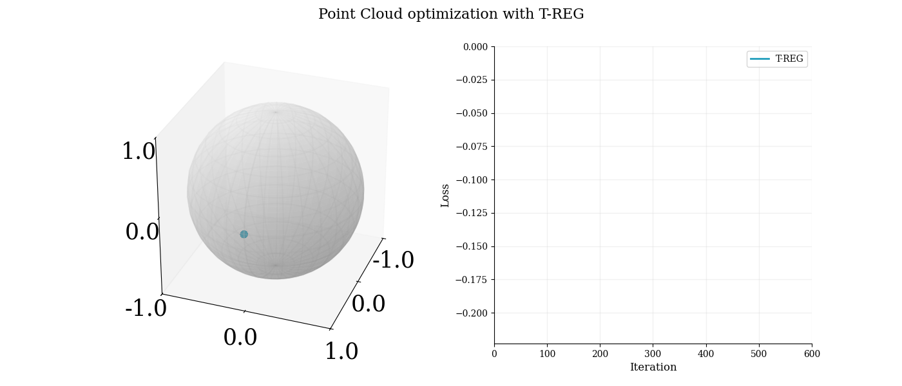

T-REG: Minimum Spanning Tree based Regularization
Our regularization T-REG has two terms, given $Z = \{z_1, ..., z_n\}\subseteq\mathbb{R}^d$, the set of $n$ embeddings of dimension $d$:
- A length-maximization loss $\mathcal{L}_{\text{E}}$ that decreases with the length of the minimum spanning tree:
\begin{equation}
\mathcal{L}_{\text{E}}(Z) = - \frac{1}{n} \,\text{E}(\mathrm{MST}({Z})),
\end{equation}
where $\text{E}(\mathrm{MST}({Z}))$ denotes the length of the $\mathrm{MST}$ of $Z$.
- A soft sphere-constraint $\mathcal{L}_{\text{S}}$ that increases with the distance to a fixed sphere $\mathbb{S}$, given by: \begin{equation} \mathcal{L}_\text{S}(Z) = \frac{1}{n} \sum_i (\Vert z_i\Vert_2 - 1)^2. \end{equation}
Theoretical Analysis
Behavior on small samples
We begin by considering the case where $n\le d+1$. It is particularly relevant since, in SSL, batch sizes are often smaller than or comparable to the ambient dimension. In order to account for the effect of the soft sphere constraint, we assume the points of $X$ lie inside some fixed closed Euclidean $d$-ball ${B}$ of radius $r$ centered at the origin.
Theorem 1: Under the above conditions, the maximum of $\text{E}({X})$ over the point sets $X\subset{B}$ of fixed cardinality $n$ is attained when the points of $X$ lie on the sphere ${S}=\partial{B}$, at the vertices of a regular $(n-1)$-simplex that has ${S}$ as its smallest circumscribing sphere.
Theorem 1 explains the behavior of T-REG as follows: first, minimizing the term $\mathcal{L}_{\text{E}}$ in expands the point cloud until the sphere constraint term $\mathcal{L}_{\text{S}}$ becomes the dominating term (which happens eventually since $\mathcal{L}_{\text{S}}$ grows quadratically with the scaling factor, versus linearly for $\mathcal{L}_{\text{E}}$); at that stage, the points stop expanding and start spreading themselves out uniformly along the sphere of directions. The amount of expansion before spreading is prescribed by the strength of the sphere constraint term versus the term in the loss, which is driven by the ratio between their respective mixing parameters $\lambda$ and $\gamma$.
Asymptotic behavior on large samples
We now consider the case where $n> d+1$, focusing specifically on the asymptotic behavior as $n\to\infty$. We analyze the constant $C$ in Theorem 1 of (Steele, 1988), which can be made independent of the density of the sampling $X$. This, in particular, allows us to show that uniform and dimension-maximizing densities are asymptotically optimal for $E(\mathrm{MST}(\cdot))$. We fix a compact Riemannian $d$-manifold, $\mathcal{M}$, equipped with the $d$-dimensional Hausdorff measure $\mu$.
Theorem 2: Let $X_n$ be an iid $n$-sample of a probability measure on $\mathcal{M}$ with density $f_X$ w.r.t. $\mu$. Then, there exists a constant $C'$ independent of $f_X$ and of $\mathcal M$ such that: \begin{equation} n^{-\frac {d-1}{d}} \cdot \text{E}(X_n) \xrightarrow[n\to \infty]{}{C' \int f_X^{\frac{d-1}{d}}}\mathrm{d} \mu \quad \textnormal{almost surely.} \end{equation}
Empirical Analysis
We generate a set of 256 points in $\mathbb{R}^3$, initially concentrated around a specific point on the unit sphere, and apply T-REG to optimize the point cloud. We observe that T-REG successfully spreads points uniformly on the sphere.
Without the sphere constraint, the points diverge to infinity, as shown below: